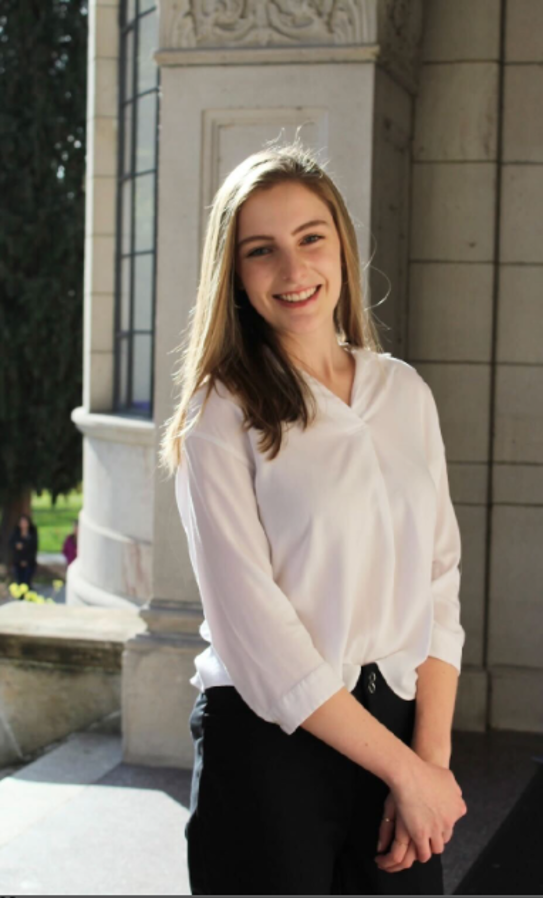
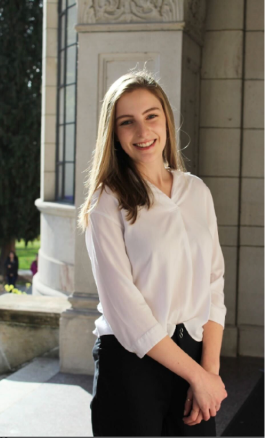
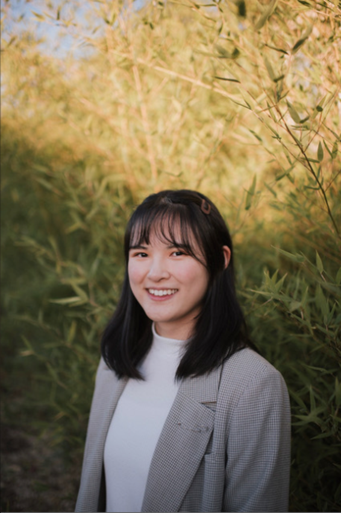
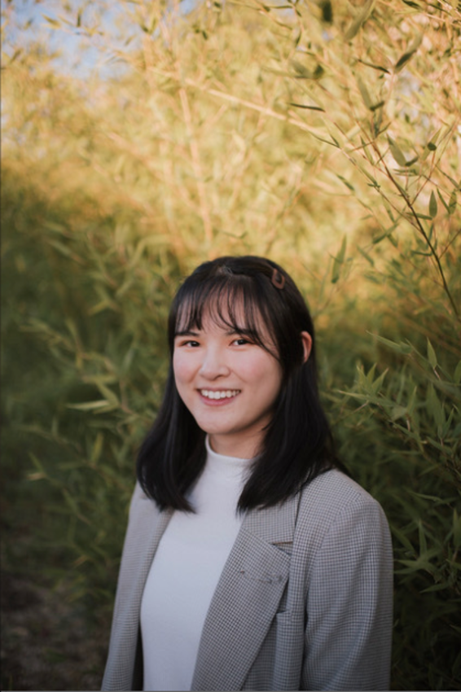

We aim to promote integenerational connections between students and seniors by implementing brain exercise techniques for improving the cognitive function of seniors and delaying the progression of Alzheimier’s Disease.
Hello, my name is Ingrid and I am a senior majoring in Neuroscience, Biochemistry, and Scandinavian Area Studies with minors in Bioethics and Danish. From a young age, I have been fascinated with how our individual experiences, stories, and memories define who we are and the world around us. This fueled my passion for neuroscience with a particular interest in neurodegenerative diseases and how preventive matters can preserve our source of identity, keeping our defining experiences with us for a lifetime. I am thrilled to continue to pursue this interest through Brain Exercise Initiative! Outside of BEI, I do research at the UW Medicine Diabetes Institute, am an undergraduate TA for the Biology Department, and enjoy various activities such as swimming!


Hi, my name is Zainab Nasir and I am a junior intending to major in neuroscience. BEI was one of the first clubs that caught my attention at the RSO Fair. Volunteering for senior residents while aiding them in mental strengthening was one of the main reasons I joined the club. Once I joined, I found myself surrounded by a like-minded community, all united under the same passion to combat Alzheimer's, one of the leading causes of death in the US. I also found some of my closest friends in the club, which was an added plus :) In my free time, I love to rock climb and play soccer. I love finding new coffee and dessert shops, and I compiled a list of all the places I've been to in Seattle (contact me for recommendations!).

 

Hi, my name is Paige and I am a junior majoring in Medical Anthropology and Global Health, with a minor in Bioethics. I wanted to join BEI because I am very passionate about serving the elderly community, something that I realized growing up alongside my great grandmother. As an aspiring Physician Assistant in geriatric medicine, I see BEI as a great way to connect with seniors in the community and learn more about the effects of Alzheimer's. I hope to carry my learning experiences from BEI into my future (and current) profession. I work as a memory care CAN and love a good iced coffee with oat milk!

 

Hi, my name is Fiona and I am a sophomore majoring in Computer Science. I joined BEI in my freshman year and found it to be the perfect opportunity to continue volunteering with the elderly during college while also being able to explore the effects that neurogenerative diseases, like Alzheimer's, have on individuals. Neuroscience has always been a subject I have been passionate about, and working with BEI has only amplified that passion! Apart from BEI, I am also involved in research at Seattle Children's Hospital and teach swim lessons at a local pool. For fun, I love playing sports at the IMA with friends, trying out new restaurants around Seattle, and going on hikes with my family. I look forward to meeting you all!


Hi my name is Janusha and I am a sophomore at UW planning on majoring in neuroscience. I joined BEI because I aspire to help people maximize the potential of their brains and I enjoy meeting new people in the community. I'm fascinated by the workings of the brain and I value the opportunity to learn more about it through my involvement in BEI. I recently started getting into rock climbing and I like to try new things. For fun, I like to listen to music and podcasts. As the outreach director, I hope to further the mission of BEI and help integrate the club within the Seattle community.
Esin Gumustekin was inspired by Dr. Ryuta Kawashima's study in Japan that suggested doing simple math and
reading aloud for 30 mins a day, 5x a week, resulted in significant cognitive improvements for those
with Alzheimer's.
These activities stimulated the prefrontal cortex, where memory, cognition, and planning are controlled;
participants who completed the exercises saw and felt improbemnts in communication, cognition, and mood.